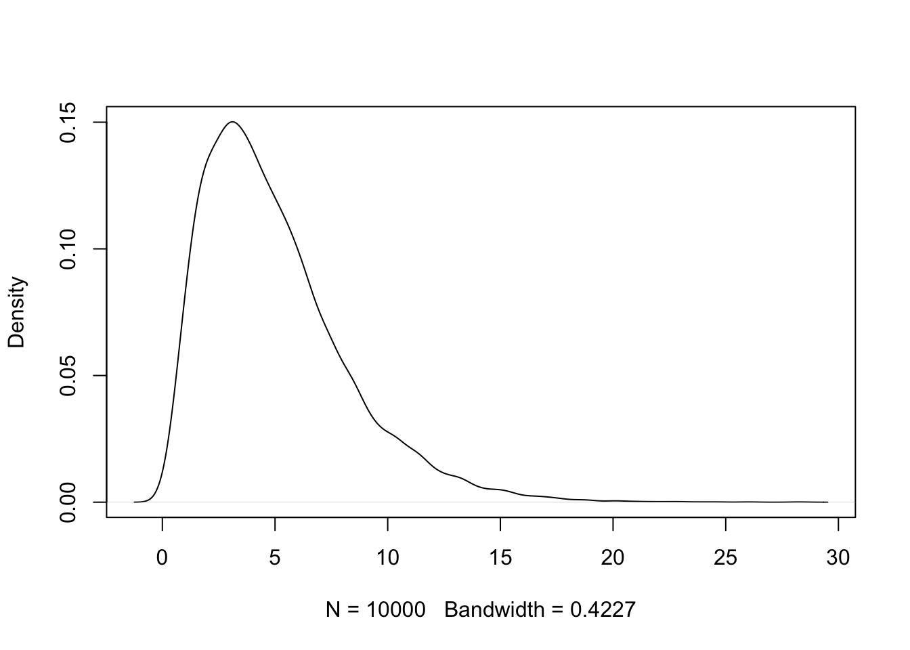

x <- rnorm(100)
summary(x)The R package blogdown “is an effort to integrate R Markdown with static website generators” according to its creator, Yihui Xie. He writes “Besides the advantage in website structures, another highlight of blogdown is that it inherited bookdown’s Markdown extensions (based on Pandoc’s Markdown), which means you can easily write technical content on your website, including everything that Pandoc supports (e.g., headings, lists, footnotes, tables, figures, citations, \(\rm\LaTeX\) math, and quotes, etc) and bookdown’s extensions (e.g., figure and table captions, cross-references, theorems, proofs, numbered equations, and HTML widgets, etc).”
I have been so focused on website and blog creation that the obvious had escaped my notice, namely that we have access to the entire universe of R Markdown and bookdown capabilities from within our website.
By way of illustration, we can embed R code and enable code syntax highlighting:
Furthermore, we can create mathematical expressions and equations using standard \(\rm\LaTeX\) commands: \[\begin{equation} \hat\beta=(X'X)^{-1}X'Y \end{equation}\]
We can also create tables using standard markdown syntax:
| Centered Header | Default Aligned | Right Aligned | Left Aligned |
|---|---|---|---|
| First | row | 12.0 | Example of a row that spans multiple lines. |
| Second | row | 5.0 | Here’s another one. Note the blank line between rows. |
And, naturally, we can effortlessly generate figures via inline R code, complete with captions and figure numbering if desired:

We can also automatically cross-reference this figure using bookdown cross-referencing extensions, e.g., Figure 1.
As well, we can use Bib\(\rm\TeX\) for references using bookdown reference syntax, as in Xie (2016) and Xie (2018), with Bib\(\rm\TeX\) being seamlessly invoked and the references being automatically generated and added to the end of this post.
And, finally, we can create interactive HTML widgets using a simple R Markdown code chunk (this required only one line of R code); enter 0.2 in the search bar which will filter on rows with a Petal Width of 0.2:
So, from an academic perspective, this is pretty exciting since it takes all of the standard tools of the trade (R, \(\rm\LaTeX\), Bib\(\rm\TeX\), markdown and bookdown) and allows one to leverage these tools without having to master the art of website creation. Focus on the narrative, not the tools.
No matching items
References
Xie, Yihui. 2016. Bookdown: Authoring Books and Technical Documents with R Markdown. Boca Raton, Florida: Chapman; Hall/CRC. https://github.com/rstudio/bookdown.
———. 2018. Blogdown: Create Blogs and Websites with r Markdown. https://github.com/rstudio/blogdown.